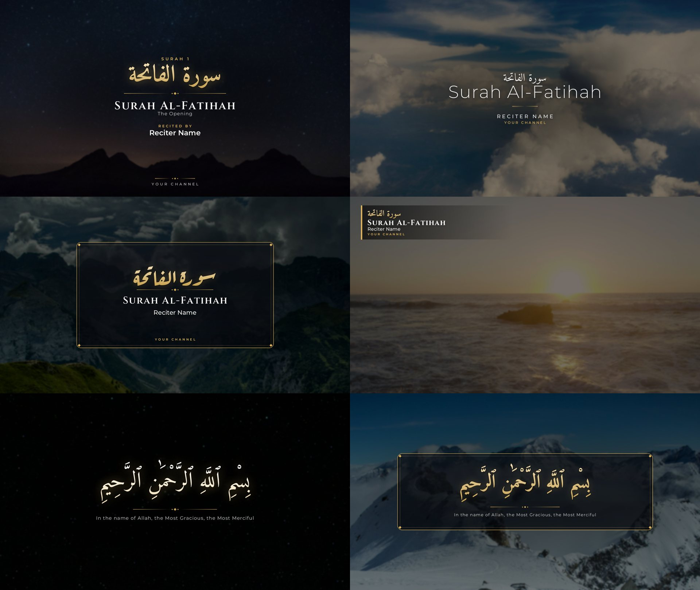

Quran Video Editor
Turn a recitation video into a finished, beautiful video — on any laptop.
Background clipsFrom your own folder, with 16 smooth transition types.
Recitation layerBlack background removed with a screen blend, or green screen with a chroma key.
Title cardsSurah, reciter, channel and Bismillah, with correct Arabic shaping.
Light and fastAbout 2× real time and under 1 GB of RAM on a 4-thread laptop CPU.
Batch and resumeRender many videos from one file; a stopped render continues.
AI-readyAn MCP server lets Claude make videos for you.
Card templates

Get started
Download the app for Windows, Linux or macOS, install FFmpeg once, and open it. Or run it from source:
git clone https://github.com/devgalib/quran-video-editor cd quran-video-editor ./start.sh # Windows: start.bat